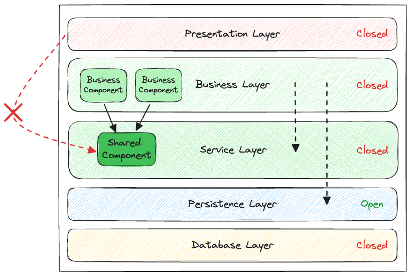

AMT
Introduction
Bertil Chapuis
## <i class="fas fa-tasks"></i> Overview of Today's Class - Multitier architecture - Model-View-Controller - The Java Ecosystem
## <i class="fas fa-tasks"></i> Sources - [Fundamentals of Software Architecture](https://learning.oreilly.com/library/view/fundamentals-of-software/9781492043447/) - [Wikipedia](https://en.wikipedia.org/) - [OpenAI ChatGPT](https://chat.openai.com/) - [GitHub Copilot](https://github.com/features/copilot)
Multitier architecture
## <i class="fas fa-sitemap"></i> Definition The **multitier** architecture, also referred to as **n-tier** or **layered** architecture, is a common architectural style for the design of modern applications. It is based on the idea of dividing an application into layers, each of which is responsible for a specific set of tasks. The most common implementation of the multitier architecture is the **three-tier** architecture (presentation, business, and data).
## Layers pattern The Layers Pattern, also known as the Layered Architecture Pattern, is a design approach used in software development to structure programs into distinct layers, each with a specific role and responsibility. This pattern promotes separation of concerns, making it easier to manage and maintain applications. This pattern has been as well employed for network development and a prime example is the OSI model: <img src="./images/osi7layers.png" alt="Layered architecture" style="width: 60%;"/> <div style="font-size: 0.5em;text-align: center;"><a href="https://www.cloudflare.com/learning/ddos/glossary/open-systems-interconnection-model-osi/">Cloudflare OSI Model</a></div>
## Layer and tier **Layers** are logical divisions that separates different concerns or functionalities. Focuses on organizing the code and improving maintainability and separation of concerns. **Tiers** are physical divisions of an application across multiple machines. Focuses on distributing the application’s components to improve security, performance, scalability, and fault tolerance. </div>
## <i class="fas fa-sitemap"></i> Conway's law > Any organization that designs a system (defined broadly) will produce a design whose structure is a copy of the organization's communication structure. <div style="font-size: 0.4em;">Melvin E. Conway, <i>How Do Committees Invent?</i>, April 1968</div> Notes: http://www.melconway.com/Home/pdf/committees.pdf In a development team, it is common to find: - front-end developers - back-end developers - database administrators These roles nicely map to the three layers of the multitier architecture: - presentation - business - data layers
### Layered architecture <img src="./images/layered-architecture-1.png" alt="Layered architecture" style="width: 60%;"/> Notes: This figure depicts a multitier architecture with four layers grouped in a **single deployment unit**. - The **presentation layer** is responsible for the **user interface** (e.g. web, mobile). - The **business layer** is responsible for the business logic (e.g. authentication, authorization, validation, transactions, etc.). - The **persistence layer** is responsible for the data access (e.g. entities, repositories, domain objects, etc.). - The **database** is responsible for the data storage (e.g. tables, views, indexes, etc.). It is common to distinguish the persistence layer from the database layer, because the database is rarely embedded or managed by the persistence layer.
### Two-tier layered architecture <img src="./images/layered-architecture-2.png" alt="Layered architecture" style="width: 60%;"/> Notes: This figure introduce a **second deployment unit** for the database. This is a common architecture for **multi-page web applications** developped with Django, Ruby on Rails, or Symfony.
### Three-tier layered architecture <img src="./images/layered-architecture-3.png" alt="Layered architecture" style="width: 60%;"/> Notes: This figure introduce a **third deployment unit** for the presentation layer. This is a common architecture for **single-page web applications** developped with Angular, React, or Vue.js. **Mobile applications** are also often developped with a similar architecture (e.g. Android, iOS, Flutter, etc.).
### Layer isolation <img src="./images/layered-architecture-4.png" alt="Layered architecture" style="width: 60%;"/> Notes: In the **multitier architecture**, a layer can be **closed** or **open**. - A **closed layer** is a layer that can only be accessed by the layer above it. - An **open layer** is a layer that can be accessed by any layer. - When a **request** is made to a **closed layer**, it is **forwarded** to the **layer below**. It may be tempting to make all layers open. For example, it is common to see the presentation layer accessing the database directly. However, this is a bad practice because it breaks the separation of concerns. With **tighly coupled layers** changes will be more difficult to isolate and the application will be harder to maintain. Closed layers are often used to improve **separation of concerns** and **low coupling** between layers. The least coupled the layers are, the easier it is to maintain and evolve the application. A change in a layer should theoretically only affect its siblings. As a result, the result of a change should be predictable and easy to test. Maintaining isolation between layers is not always easy. As it requires a lot of boilerplate code, it is often tempting to make all layers open. Keeping the number of layers small is a good way to minimize accidental complexity.
### A recipe for spaghetti code Notes: If all the layers are **open**, the presentation layer can potentially access all the other layers directly. This is a **bad practice** because it breaks the **separation of concerns**. **Tight coupling** between layers makes the application **harder to maintain** and **evolve**. This is a recipe for **spaghetti code** üçù turning the application into a **big ball of mud** üß∂.
### An increasing complexity Notes: As the application grows, the **business layer** becomes more and more complex. This is a common problem in **monolithic applications**, and shared utility classes start to appear in the **business layer**. As they are allowed to, component in the **presentation layer** start to access these utility classes directly, weaking the **separation of concerns**. And you know, creative front-end engineers ü뮂Äçüé® are not always the most disciplined developers ü§∑‚Äç‚ôÇÔ∏è.
### Reducing complexity with a new layer  Notes: This Figure address this issue by introducing a new **service layer** responsible for the **shared components**. This **service layer** is **open**. As a result, the **business layer** can access both the **service layer** and the **persistence layer**. By contrast, the **presentation layer** can only access the **business layer**, which is a **closed layer**, improving the **separation of concerns**. The decision to introduce a new layer should be made carefully, as it adds complexity to the application. This kind of architectural decision is typically made by the **architect** when the application grows and the **business layer** becomes too **complex**. In general, it is a good idea to start with a **small number of layers** and to **add layers** as the application grows. Notice, that the enforcement of these architecture principles solely relies on the **discipline** of the team.
### An outdated architecture? The **multitier architecture** is often associated with pejorative terms such as **monolith**, **big ball of mud** üß∂, or **spaghetti code** üçù. The **microservices architecture** is often presented as the solution üí° to all the problems of the multitier architecture. However, a **microservice** is just a **small multitier application** and it is not a silver bullet to **architectural problems** üèõÔ∏è.
### Big ball of mud Each dot on the perimeter of the circle represents a class, and each line represents connections between the classes. <img src="./images/fosa_0901.png" alt="Big ball of mud" style="width: 35%;"/> <div style="font-size: 0.5em;text-align: center;">Mark Richards, Neal Ford, <i>Fundamentals of Software Architecture</i></div>
<img src="./images/monolith-vs-microservices.jpeg" alt="Monolith vs microservices" style="width: 100%;"/> https://twitter.com/ddprrt/status/1425418538257428488
## <i class="fa-brands fa-amazon"></i> Case study: Amazon Video Streaming Amazon Video Streaming sound like a good candidate for a microservice architecture. Read the following article on the Amazon Engineering Blog to learn more about the architecture of the Monitoring Service of Amazon Video Streaming: https://www.primevideotech.com/video-streaming/scaling-up-the-prime-video-audio-video-monitoring-service-and-reducing-costs-by-90 Identify and discuss some key takeaways.
Model-View-Controller (MVC)
## <i class="fas fa-sitemap"></i> Definition **Model-View-Controller** (MVC) is a common pattern for the design of applications. It is **loosely** based on the idea of dividing an application into three interconnected parts: - The **model** is responsible for the **data** (e.g. entities, repositories, domain objects, etc.). - The **view** is responsible for the **user interface** (e.g. web page). - The **controller** is responsible for the **business logic** (e.g. routing, authentication, authorization, validation, transactions, etc.). Notes: Originally, the MVC pattern was introduced by Trygve Reenskaug in 1979 to design graphical user interfaces (GUIs) in Smalltalk. The popularization of the MVC pattern in the context of web applications is often attributed to the WebObjects framework developped by NeXT in the 1990s. First developped in Objective-C, WebObjects was later ported to Java. Many frameworks (e.g. Django, Ruby on Rails, Symfony, Spring, etc.) contributed to the popularization of this pattern.
## <i class="fas fa-sitemap"></i> The many faces of MVC Many variants of the MVC pattern exist (e.g. Model-View-Presenter, Model-View-Template, Model-View-ViewModel, etc.). In general, these variants share the same idea of separating the data, the user interface, and the business logic. However, the responsibilities of each part may vary slightly.
<img src="./images/mvc-2.png" alt="Model-View-Controller" style="width: 80%;"/> Notes: [Wikipedia](https://en.wikipedia.org/wiki/Model%E2%80%93view%E2%80%93controller) provide the following description of the interactions of the MVC pattern: *In addition to dividing the application into these components, the model–view–controller design defines the interactions between them.* - *The model is responsible for managing the data of the application. It receives user input from the controller.* - *The view renders presentation of the model in a particular format.* - *The controller responds to the user input and performs interactions on the data model objects. The controller receives the input, optionally validates it and then passes the input to the model.* *As with other software patterns, MVC expresses the "core of the solution" to a problem while allowing it to be adapted for each system.[38] Particular MVC designs can vary significantly from the traditional description here.*
<img src="./images/mvc-1.png" alt="Model-View-Controller" style="width: 80%;"/> Notes: In this variant described by [GeeksForGeeks](https://www.geeksforgeeks.org/benefit-of-using-mvc/), the controller handles the user requests, manipulates the model, sends the data to the view, which renders the data to the user.
<img src="./images/mvc-3.png" alt="Model-View-Controller" style="width: 80%;"/> Notes: In this simple variant, inspired by diagrams found in the documentation of web frameworks such as Django, Ruby on Rails, or Symfony, the controller handles the user request, manipulates the model and renders the view.
## <i class="fas fa-sitemap"></i> MVC as an organizational pattern MVC is often presented as an architectural pattern, but it is more of an organizational pattern, i.e., it helps to organize the code of an application. The **model**, the **view**, and the **controller** are often **co-located** or **grouped** using a naming convention. As a result, developers can easily find the code associated with a specific feature which improves the **maintainability** of the application.
## <i class="fas fa-sitemap"></i> MVC as way to enforce opinions A lot of web frameworks implementing the MVC pattern (e.g. Django, Ruby on Rails, Symfony, etc.) are said to be **opinionated**. This means that they impose a specific way to organize the code of an application. For instance, the following directory structure is common in web frameworks such as Django, Ruby on Rails, or Symfony. ``` . ├── controllers │ ├── user_controller.py │ └── ... ├── models │ ├── user_model.py │ └── ... └── views ├── user_view.py └── ... ``` When the framework automatically bind the user request to the corresponding component, it is said to be **convention over configuration**. Notes: Opinions can be pushed to the extreme. For instance, a convention may be used by a framework to automatically route a request to `/user/edit/1.html` to the `edit` method of the `UserController` class and render the result with the `edit` method of the `UserView` class. At a first glance, it may seem like a good idea, however: - It can be a source of confusion for developers who are not familiar with the framework. - It can be difficult to customize the behavior of the framework when the convention does not fit the requirements of the application. - It can be difficult to test the application in isolation, as the framework is tightly coupled to the application (e.g. calling the `edit` method of the `UserController` class may require to mock the `UserView` class).
## <i class="fa-brands fa-github"></i> Case study: GitHub GitHub is a good example of a web application developped with Ruby on Rails, which is a framework implementing the MVC pattern. Read the following article on the GitHub Engineering Blog to learn more about the architecture of GitHub: https://github.blog/2023-04-06-building-github-with-ruby-and-rails/ Identify and discuss some key takeaways.
The Java Ecosystem
## <i class="fas fa-sitemap"></i> The Java Ecosystem The Java ecosystem is huge and not easy to navigate. The learning curve is steep and it is easy to get lost. Java was released in 1995 and Java EE in 1999. The ecosystem has been growing ever since. The number of frameworks, libraries, and tools is overwhelming. To navigate this ecosystem, it is important to understand the difference between specifications and their implementations (runtimes). But first...
## <i class="fas fa-sitemap"></i> Specifications <img src="./images/jakarta.png" alt="Jakarta EE" style="width: 25%; margin-left: 0;"/> **Jakarta EE** (formerly known as Java EE) is a set of specifications for the development of **multitier applications** in Java. <img src="./images/microprofile.png" alt="MicroProfile" style="width: 40%; margin-left: 0;"/> **MicroProfile** is a set of specifications overlapping with Jakarta EE, but with a focus on **microservices** and **cloud-native** applications. Notes: The timeline of the Java EE specifications is as follows: - J2EE 1.2 (1999) - J2EE 1.3 (2001) - J2EE 1.4 (2003) - Java EE 5 (2006) - Java EE 6 (2009) - Java EE 7 (2013) - Java EE 8 (2017) - Jakarta EE 8 (2019) - Jakarta EE 9 (2020) - Jakarta EE 10 (2021) - Jakarta EE 11 (2022) When Oracle decided to stop the development of Java EE, the community continued the development of the specifications under the name Jakarta EE at the Eclipse Foundation. As the Java name is a trademark of Oracle, the name of the specifications had to be changed as well as the name of the packages. Today, the specificaton efforts for Jakarta is alive and well. The MicroProfile initiative is very active and the Jakarta EE specifications are being updated.
<img src="./images/jakarta-ee-10.jpeg" alt="Jakarta EE" style="width: 100%;"/> Notes: The Jakarta EE 10 specifications covers a wide range of topics: - Dependency Injection - Persistence - Validation - Web Services - Configuration - Messaging - Security - Authentication - Authorization - Health Checks - Monitoring - Etc.
## <i class="fas fa-sitemap"></i> Implementations (runtimes) Implementations of the specifications are often referred to as **runtimes**. Runtimes implementing spectifications can take many forms: - Application servers (e.g. GlassFish, OpenLiberty, WildFly, Paraya, TomEE, etc.) - embedded servers () - Frameworks (e.g. Spring Boot, Quarkus, Helidon, Micronaut, etc.) - Libraries (e.g. Hibernate, EclipseLink, etc.) Some runtimes are **certified** by the Eclipse Foundation (GlassFish, OpenLiberty, WildFly, Paraya, TomEE). Other runtimes use the specification as a **baseline**, but are not **certified** (Spring Boot, Quarkus, Helidon, Micronaut, etc.). The promise of the specifications is that application are **portable** between **certified** runtimes. In other words an application written for one runtime can be deployed on another runtime without modification.
<img src="./images/jetbrains-survey-1.png" alt="JetBrains survey" style="width: 60%;"/> Notes: Source: [Jetbrains Survey 2022](https://www.jetbrains.com/lp/devecosystem-2022/java/)
<img src="./images/jetbrains-survey-5.png" alt="JetBrains survey" style="width: 100%;"/> Notes: Source: [Jetbrains Survey 2022](https://www.jetbrains.com/lp/devecosystem-2022/java/)
<img src="./images/jetbrains-survey-4.png" alt="JetBrains survey" style="width: 100%;"/> Notes: Source: [Jetbrains Survey 2022](https://www.jetbrains.com/lp/devecosystem-2022/java/)
<img src="./images/jetbrains-survey-6.png" alt="JetBrains survey" style="width: 100%;"/> Notes: Source: [Jetbrains Survey 2022](https://www.jetbrains.com/lp/devecosystem-2022/java/)
<img src="./images/jetbrains-survey-7.png" alt="JetBrains survey" style="width: 100%;"/> Notes: Source: [Jetbrains Survey 2022](https://www.jetbrains.com/lp/devecosystem-2022/java/)
## <i class="fas fa-sitemap"></i> Tooling **Tooling** is an important part of the Java ecosystem. - **IDEs** (e.g., Eclipse, IntelliJ, NetBeans, etc.) are used to write, debug, and refactor code. - **Build tools** (e.g., Maven, Gradle, etc.) are used to compile, test, and package applications. - **Testing frameworks** (e.g., JUnit, Mockito, etc.) are used to write and run tests. - **Continuous integration** tools (e.g., Jenkins, GitHub Actions, GitLab CI, etc.) are used to automate the build and testing process. - **Containerization tools** (e.g., Docker, Podman, etc.) are used to package applications in containers. - **Orchestration tools** (e.g., Kubernetes, OpenShift, etc.) are used to deploy and manage applications in containers.
<img src="./images/jetbrains-survey-3.png" alt="JetBrains survey" style="width: 100%;"/> Notes: Source: [Jetbrains Survey 2022](https://www.jetbrains.com/lp/devecosystem-2022/java/)
<img src="./images/jetbrains-survey-2.png" alt="JetBrains survey" style="width: 100%;"/> Notes: Source: [Jetbrains Survey 2022](https://www.jetbrains.com/lp/devecosystem-2022/java/)
## Perspectives Java is **pervasive** in the enterprise and will continue to be used for many years to come. It is widely used in the industry and there is a lot of demand for Java developers. Many local companies such as Swissquote, Swisscom, or UBS are extensively using Java. Internationally, companies such as Google, Amazon, Apple, or Meta are also using Java for their backend services. Notes: Source: [Jetbrains Survey 2022](https://www.jetbrains.com/lp/devecosystem-2022/java/)
<img src="./images/jetbrains-survey-8.png" alt="JetBrains survey" style="width: 100%;"/> Notes: Source: [Jetbrains Survey 2022](https://www.jetbrains.com/lp/devecosystem-2022/java/)
<img src="./images/jobs-jobup.png" alt="JetBrains survey" style="width: 100%;"/>
<img src="./images/jobs-google.png" alt="JetBrains survey" style="width: 100%;"/>
<img src="./images/jobs-apple.png" alt="JetBrains survey" style="width: 100%;"/>
<img src="./images/jobs-amazon.png" alt="JetBrains survey" style="width: 100%;"/>
<img src="./images/jobs-meta.png" alt="JetBrains survey" style="width: 100%;"/>